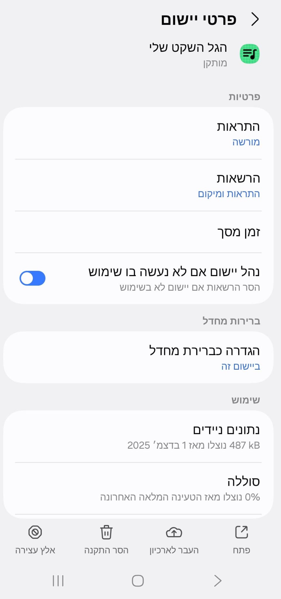
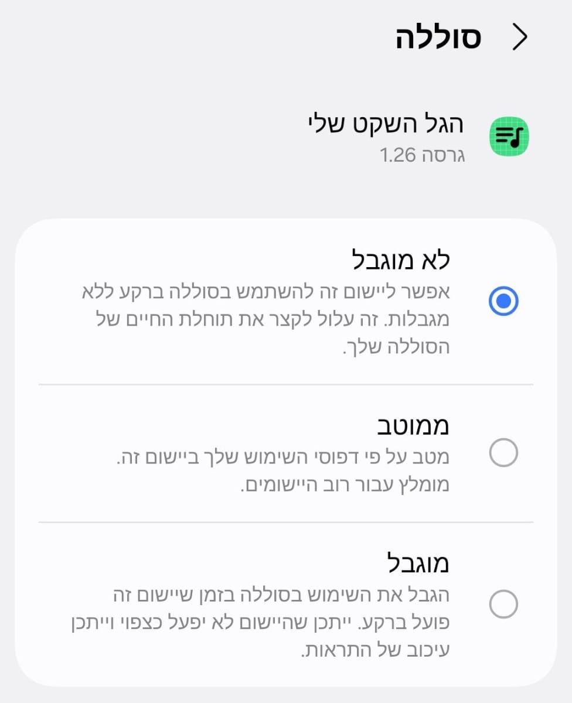

Links
Live חי
GLZ גלצ: https://glz.co.il/גלגלצ/
KAN כאן: https://www.kan.org.il/live/?stationId=4483#
Not Live - לא חי - Just the last hour news - חדשות השעה
GLZ גלי צהל: https://omny.fm/shows/newsbulletin/playlists/podcast
Reshet Bet כאן ב: https://www.kan.org.il/hourly-news/
More
Radio Apps - אפליקציות רדיו: https://play.google.com/store/search?q=רדיו&c=apps
Yes מבזקים, ערוץ 101 המשמש את חברת: https://news.walla.co.il/breaking
בשדה באפליקציה "מיקום
הפריט יכול להיות עיר מהרשימה
(geoNameId-או ה),
(latitude,longitude-או ה),
ואז יוצגו זמני הדלקת הנרות וההבדלה
הזריחה והשקיעה
For example לדוגמה
US-New York
IL-Jerusalem
Call to תוכל לקרוא ל-
https://www.hebcal.com/shabbat?cfg=json&city=IL-Ramat%20Gan
לוודא את אופן השימוש
geoNameId-למציאת ה
https://www.geonames.org/search.html?q=Nataf&country=
For verification לוודא שהוא נתמך
https://www.hebcal.com/zmanim?cfg=json&geonameid=10254173
Utils עזרים
More...
https://shahart.github.io/myquietwave
Offline Bible תנ"ך למצב אופליין, למקרה ותהיו בחדר ללא קליטה:
https://shahart.github.io/heb-bible
Troubleshooting
וודא שהטלפון לא יעבור איתחול באמצע הלילה
הגדרות >> תחזוקת המכשיר >> מיטוב אוטומטי >> הפעלה מחדש אוטומטית: הפעלה אוטומטית בעת הצורך >> כבוי
:ודא שהאפליקציה לא מוגבלת במיטוב סוללה
מתוך פרטי האפליקציה, פתח את הגדרות הסוללה

וקבע את המיטוב על "לא מוגבל" או "לא ממוטב

בצע זאת גם עבור האפליקציה שמשמיעה את הרדיו
יש לזכור שהאפליקציה שולטת רק בעוצמת הקול של המוסיקה, ולא של ההתראות או הצלצול. כדאי להשתיק אותם ידנית
ליתר בטחון שלא יושמע משהו בשבת, אפשר גם לשים את הטלפון על שקט או רטט